These are my Calculus Activity Worksheets and Exam Sheets
Infomercial Video
Score: 100 / 100 | Limits, Performance & Optimization
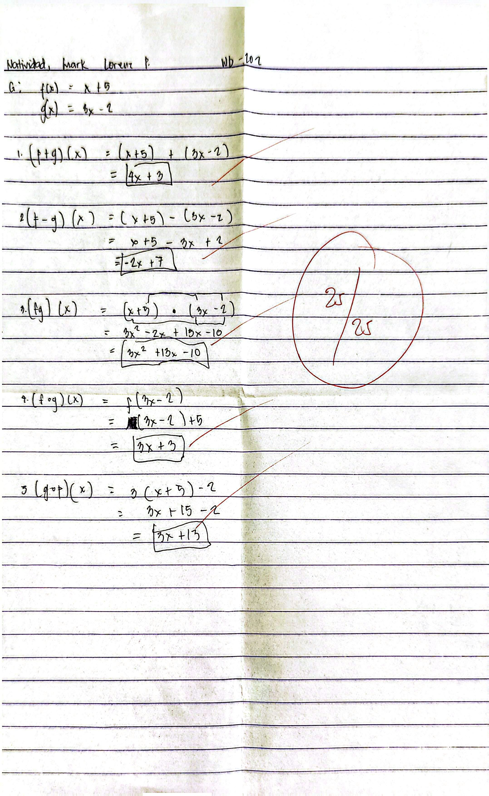
Activity #1: Function Operations
Score: 25 / 25 | (f+g), (f-g), (f·g), (f ∘ g)

Poster Activity
Score: 50 / 50 | Function Operations Poster Design
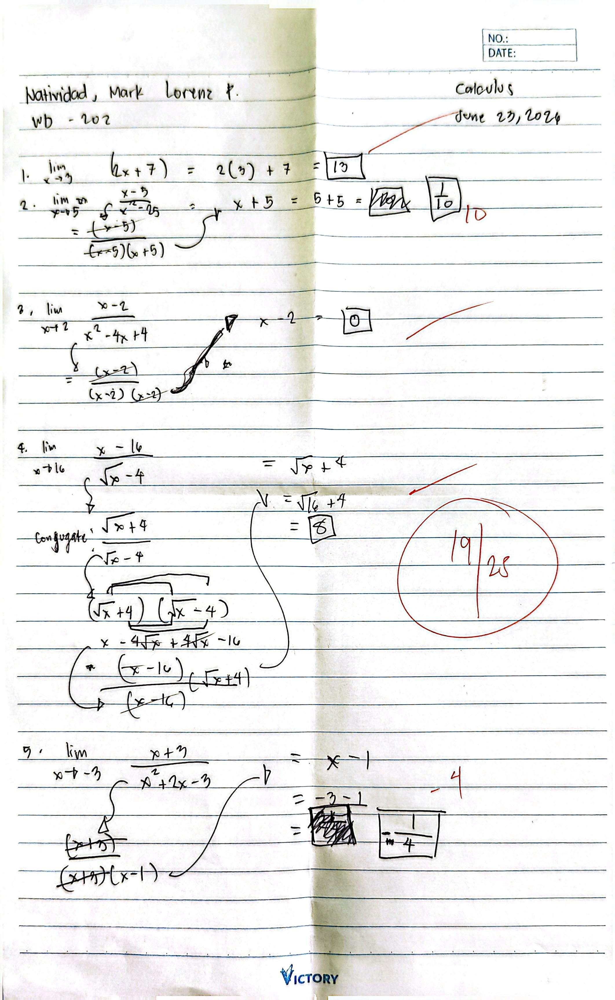
Activity #2: Rational Limits
Score: 19 / 25 | Limits Practice Set

Activity Card: Group Cover
Score: 50 / 50 | Group Cover & Roster Sheet

Activity Card: Page 1
Score: 50 / 50 | Direct Substitution Limit

Activity Card: Page 2
Score: 50 / 50 | Polynomial Substitution
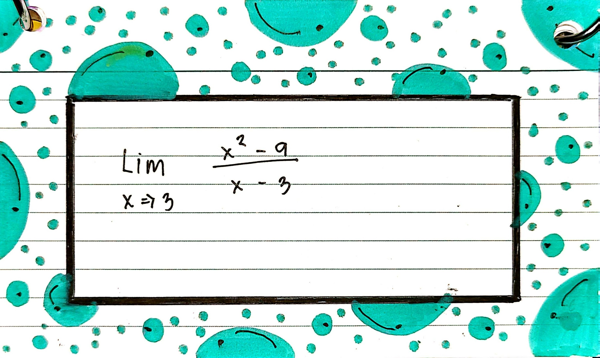
Activity Card: Page 3
Score: 50 / 50 | Limit via Factoring

Activity Card: Page 4
Score: 50 / 50 | Indeterminate Limit
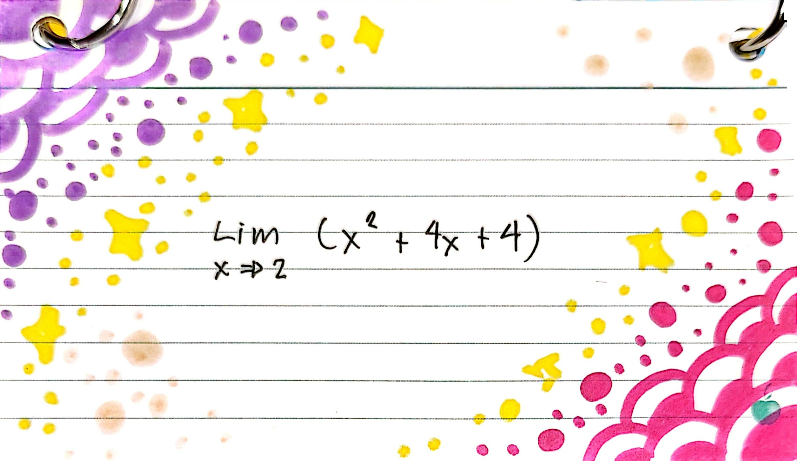
Activity Card: Page 5
Score: 50 / 50 | Perfect Square Limit

Activity Card: Page 6
Score: 50 / 50 | Complex Fraction Limit

Activity Card: Page 7
Score: 50 / 50 | Radical Conjugate Limit

Activity Card: Page 8
Score: 50 / 50 | Difference of Cubes

Activity Card: Page 9
Score: 50 / 50 | Quadratic Substitution
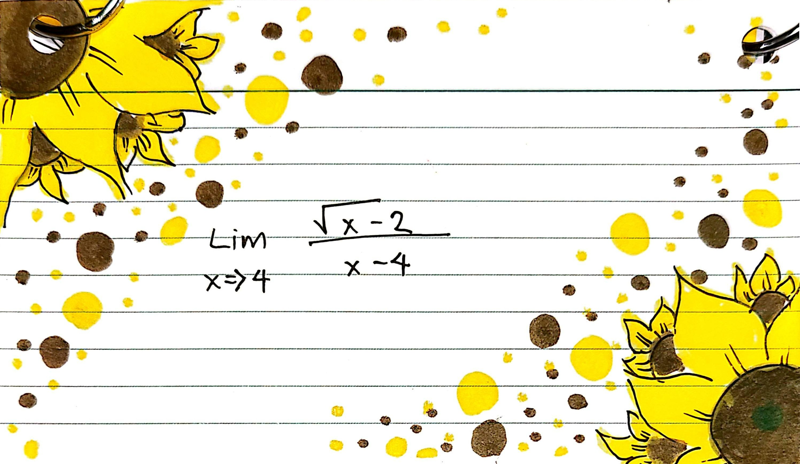
Activity Card: Page 10
Score: 50 / 50 | Radical Conjugate Practice
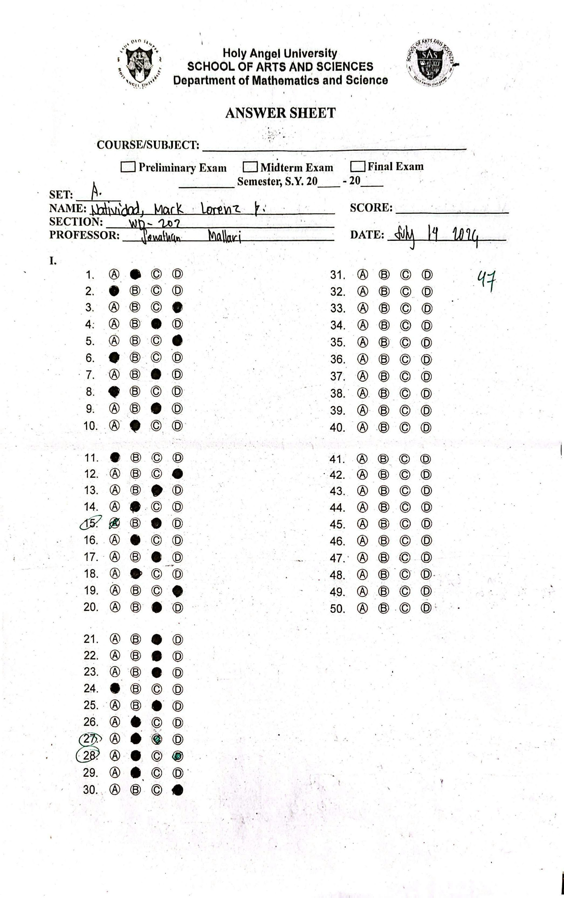
Prelims: Answer Sheet
Score: 47 / 50 | Part 1 Multiple Choice
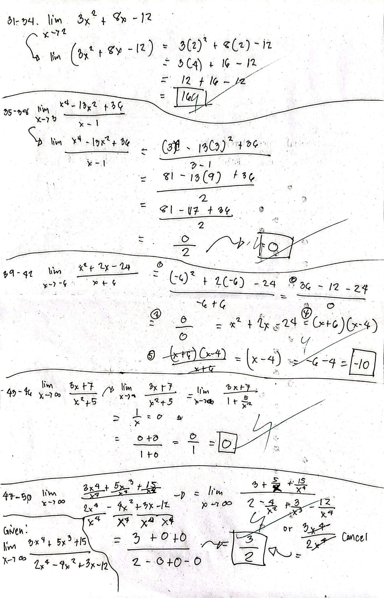
Prelims: Solutions
Score: 47 / 50 | Part 2 Limits at Infinity
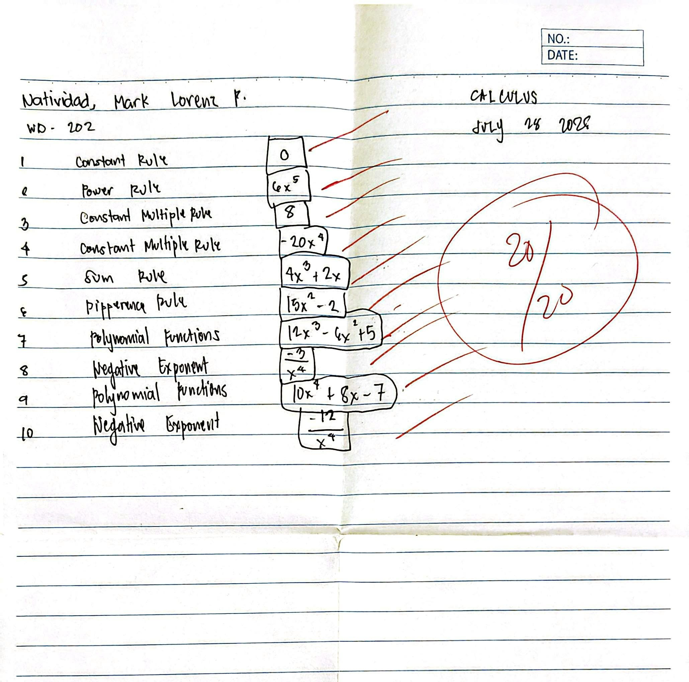
Activity #4: Differentiation Rules
Score: 20 / 20 | Power, Constant, & Sum Rules
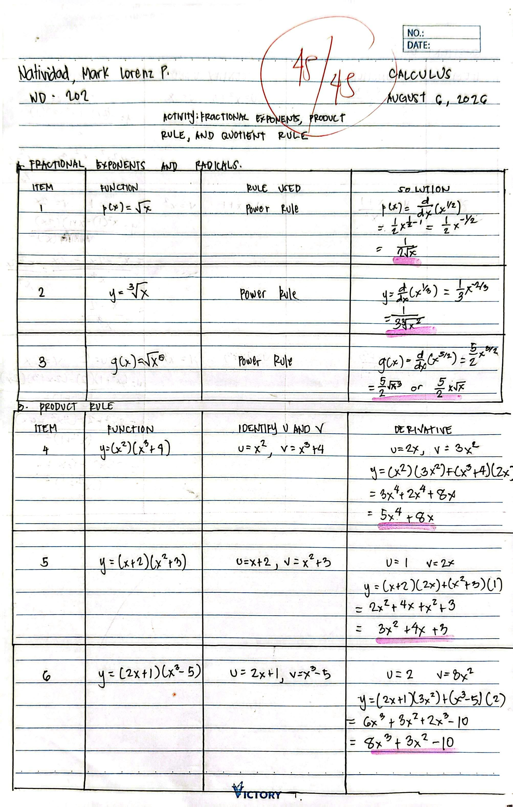
Activity #5: Product Rule & Radicals
Score: 45 / 45 | Fractional Powers & Product Rule
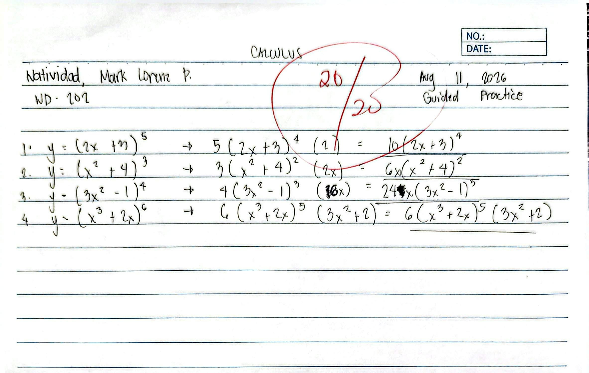
Activity #6: Chain Rule Practice
Score: 20 / 20 | Composite Function Derivatives
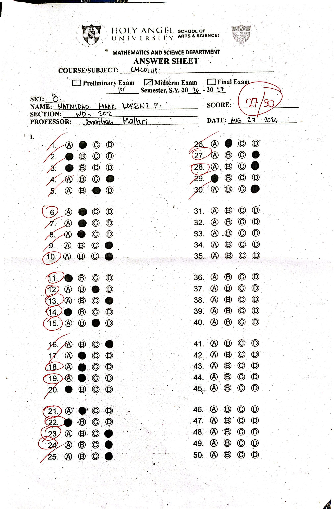
Midterms: Answer Sheet
Score: 28 / 50 | Part 1 Multiple Choice
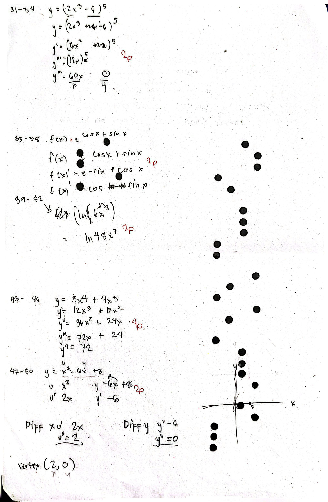
Midterms: Solutions
Score: 28 / 50 | Higher Derivatives & Curve Analysis